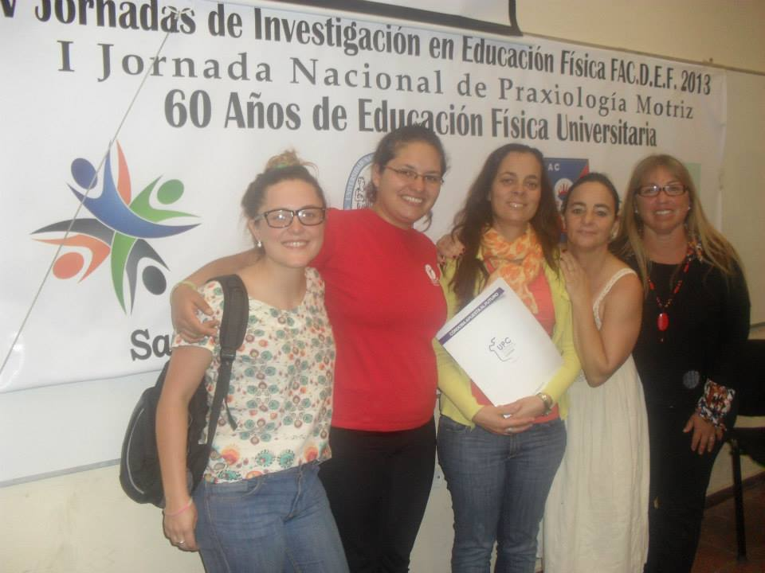
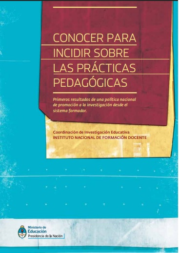

Origen e Itinerario
La FEP capitaliza el potencial de las prácticas culturales (especialmente corporales y artísticas) con énfasis en acciones innovadoras y sustentables desde un enfoque de derechos humanos, con equidad de género, interseccional y accesible, orientadas hacia la construcción de comunidades republicanas y democráticas para que todas las personas tengan acceso y disfruten de una vida digna.
El colectivo Praxis, grupo de estudio, formación e investigación en Educación Física, Educación y Desarrollo, se conformó en 2004 a partir de experiencias de investigación-acción y formación docente desarrolladas en el Instituto del Profesorado en Educación Física, hoy Facultad de Educación Física Ipef de la Universidad Provincial de Córdoba. Desde entonces, se trabaja en la problematización de prácticas de enseñanza con reflexión crítica y compromiso con los territorios. La tarea se caracteriza además, por la producción de conocimiento situado, en diálogo con docentes, estudiantes, escuelas, universidades, comunidades en territorio, organismos públicos y privados.
En el transcurso de dos décadas se han desarrollado investigaciones financiadas por organismos internacionales, nacionales y provinciales. Ha participado de manera sostenida en diversos eventos académicos, producido publicaciones científicas y colaborado en la organización de instancias de formación y debate en Argentina y Latinoamérica. En 2025, se obtuvo la personería jurídica y se constituyó formalmente como Fundación Experiencia Praxis, presidida por Carina Bologna y Griselda Amuchástegui.

